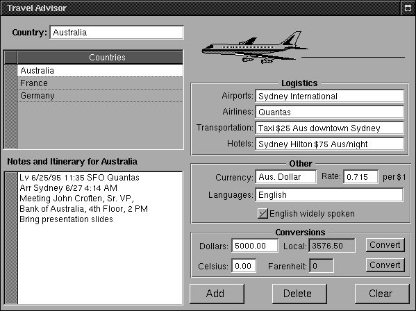

Copyright ª1996 by NeXT Software, Inc. All Rights Reserved.
Next Section
3. Travel Advisor Tutorial
Introduction
In this chapter you create Travel Advisor, an application that is considerably more complex than the Currency Converter application you built in the first tutorial. Travel Advisor is a forms-based application used for entering, viewing, and maintaining records on countries that the user travels to. Users enter a country name and information associated with that country. When they click Add, the country appears in the table below the country name. They can select countries in the table, and the information on that country appears in the forms. The application also performs temperature and currency conversions.

This chapter presents a lot of information on OpenStep programming. Among other things, you'll learn how to:
Use several new objects on Interface Builder's palettes.
Assign an icon to an application.
Print the contents of a view.
Use collection objects (NSArray and NSDictionary).
Use string objects (NSString).
Archive and unarchive object data.
Format and validate field contents.
Manage events through delegation.
Quickly find information related to your project.
Use Project Builder's graphical debugger.
Perhaps most interestingly, you will reuse the Converter class you implemented in the previous tutorial.
Collection objects allow you to store, organize, and access data in different ways. String objects represent textual strings in various encodings.
You can find the TravelAdvisor project in the AppKit subdirectory of /NextDeveloper/Examples.